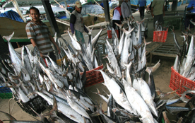
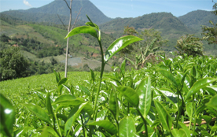

Tentang Kami

Visi
Koperasi Mitra Bhakti Nusantara (Komitra) sebagai bagian dari Pelaku Ekonomi berperan aktif untuk memajukan kesejahteran anggota dan masyarakat Pedesaan dan Pantai dalam rangka mewujudkan masyarakat maju, adil dan Makmur.

Misi
Mendorong, mendidik dan melatih Anggota dan Masyarakat agar terampil dan memiliki pengetahuan dan mampu Mandiri untuk mengelola sumber daya alam potensial didaerahnya dengan cara menyiapkan lapangan pekerjaan dan permodalan melalui Proyek Pemberdayaan di bidang Pertanian, Perkebunan, Peternakan, Perikanan dan bidang lain yang terkait dengan Pemberdayaan masyarakat.
Sejarah
Komitra berdiri pada tahun 2010. . . .
Informasi Cabang
Kolom informasi Cabang . . .
Koperasi Bhakti Nusantara
beberapa penjelasan mengenai komitra
penjelasan.
penjelasan....